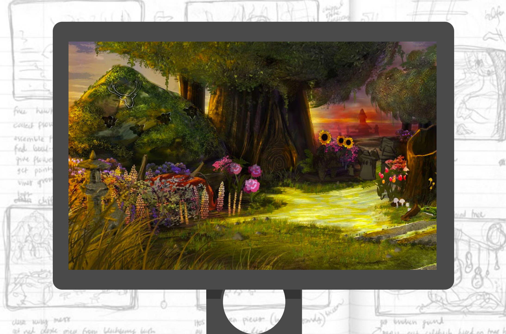

nadine aurora tabing
ux design & research
LiveStories
Redesign of public data visualization tools


Napster X
ux design/research for a social music streaming app with microtransactions
Reveal Chat
ux development & design of an anonymous chat app which reached 2 million users in under 9 months
Dream Builder, Elements
game/ux design & project management of 2 casual PC games

PhotoCity
development/ux design/research for a project to reconstruct the world in 3D

Other Projects
UI design for the local shiba inu club; and, more projects to come

Illustration & Photography
stickers, watercolor, dog pics, writing, & too many planners

My Dog!!
her name is ichika. she adores balls and chicken. she's cute and great!